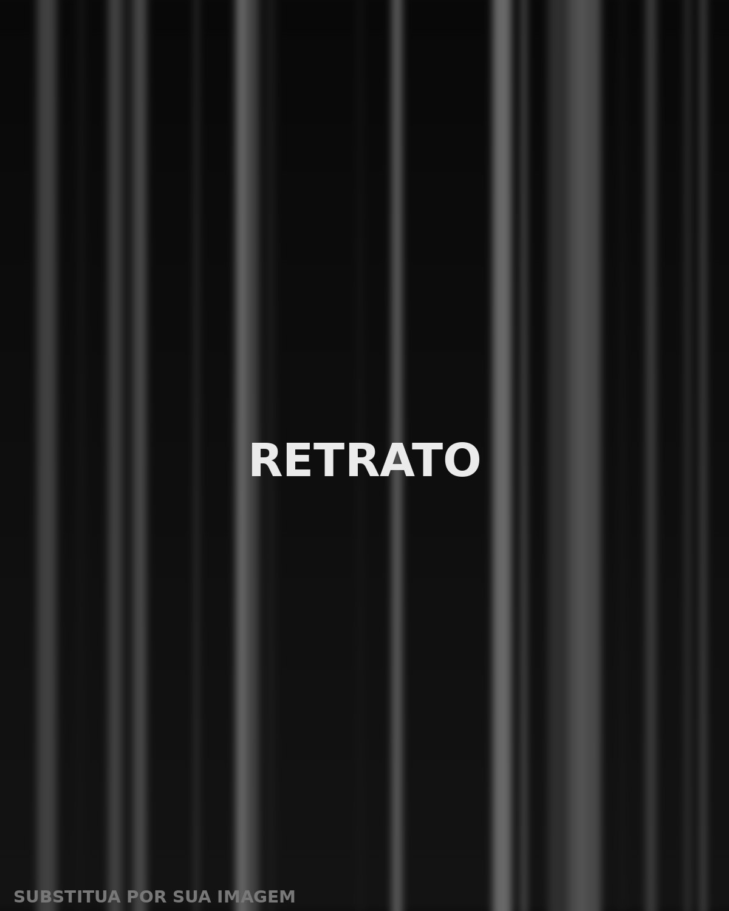

Foco no
essencial
Toda experiência digital forte nasce de um núcleo preciso. É esse ponto que eu procuro em cada projeto — antes da cor, antes da animação, antes do código.

Trabalho na interseção entre branding, motion design e web. Não entrego layout bonito que não converte, nem animação bacana que não comunica.
Meu processo começa por entender o negócio: quem compra, o que trava a decisão, qual é a promessa central. Só depois vem o sistema visual — tipografia, grid, movimento — construído para carregar essa promessa em cada tela.
Movimento entra como linguagem, não como enfeite: motion para campanha, social media e interface. E, quando o projeto é web, escrevo o front-end à mão — HTML semântico, CSS moderno e animação com GSAP. Leve, acessível e que ranqueia.
Se você está reposicionando uma marca, lançando um produto ou refazendo um site que já não representa mais o que a empresa virou, provavelmente temos assunto.
Estratégia
- Posicionamento de marca
- Arquitetura de informação
- Pesquisa e benchmark
- Naming e territórios verbais
Branding
- Identidade visual
- Design system
- Manual de marca
- Aplicações e papelaria
Motion
- Motion design
- Animação 2D
- Vinhetas e aberturas
- Microinterações
Social Media
- Direção de conteúdo
- Feed e stories
- Reels e vídeo curto
- Templates editáveis
Web
- Landing pages
- Design de interface
- HTML · CSS · JavaScript
- GSAP · Three.js · SEO